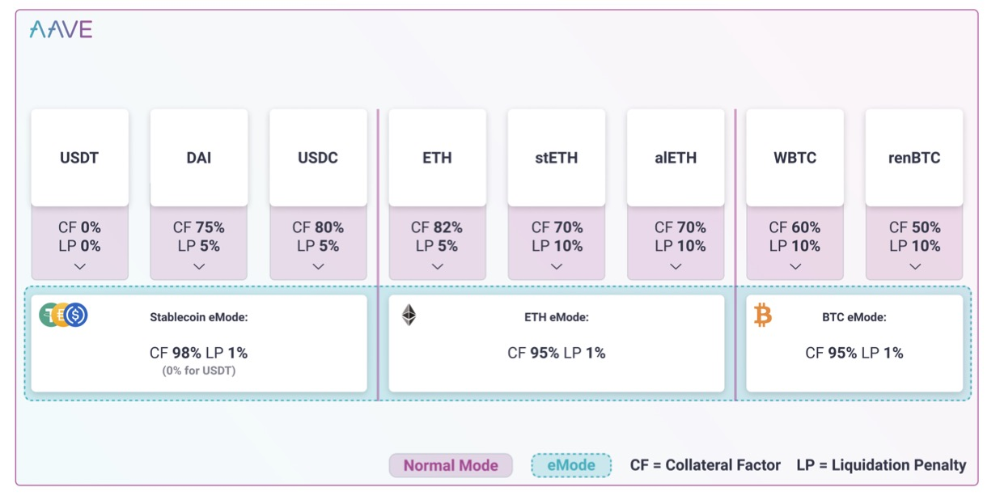
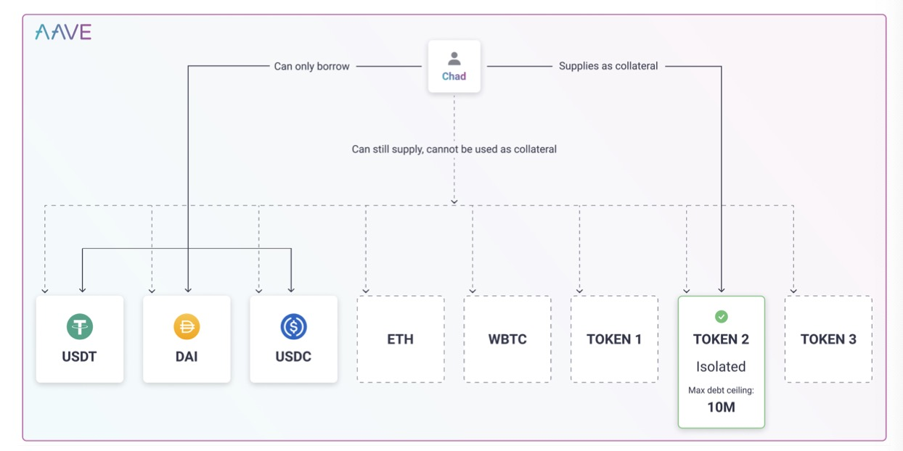
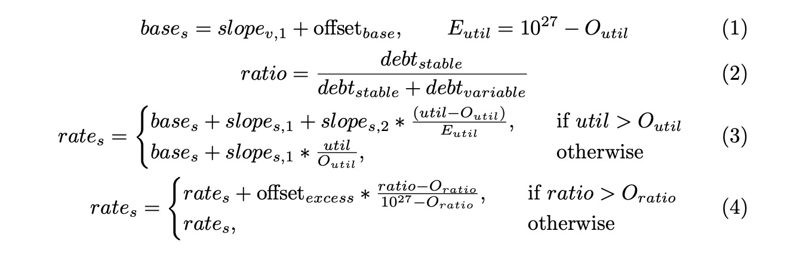
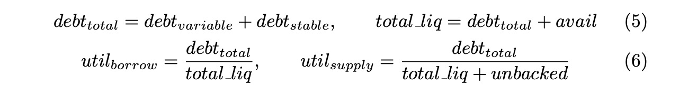
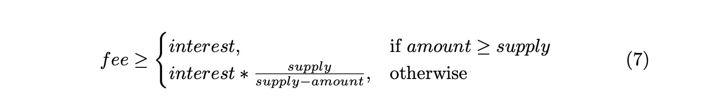

1.简介
2020年Aave协议于DeFi生态横空出世，前端开源并托管在IPFS上，在Aave治理模式的控制下，现在已经成为了最大的DeFi协议之一，巅峰流动性达到300亿美金。Aave的的很多关键feature(比如aToken，可选稳定利率与可变利率，信贷授权等等)都成为了行业标准，成为了DeFi协议的基础设施。但是跟所有的技术一样，Aave协议也会随着持续的研究、市场数据分析和社区反馈在一些方面进行迭代升级。
这次的提升在以下四个领域： 1. 资本效率 2. 协议安全 3. 去中心化 3. 用户体验
Aave V3的设计实现了上述四类增强，改善了用户体验，在不牺牲安全性的前提下提高了资本效率。
在介绍V3新特性之前，我们在下一节中介绍一下这些四方面需要改进的原因。
1.1 资本效率
为流动性提供者创造更多收益 Aave协议在多个网络上的总流动性已经接近200亿美元，其中大多数都躺在合约里不动，仅仅从收到借款收益。尽管这笔收益稳定安逸，但是它完全可以给用户提供新的功能，在不增加风险的同时重新利用起来。(这并不包括把资金注入其它协议运作去流动性挖矿-- 这会造成很大的风险，也不适合作为DeFi协议layer 0的Aave)
优化借款能力 在以往的迭代中，由于在资产池模型中任何质押物都可以用来借入资产，借款人面临着最大化借款能力的挑战。也正因如此，借款交易的风险参数被设定的相当保守。
低效的底层网络 Aave上的大多数资产都放在以太坊L1网络上。这个饱和的网络导致交易费比较高，也是用户的痛点。网络的低效率也会放映在预言机在短时间内提交准确价格的能力上。
聚合流动性方法 在Aave协议里，用户的总质押量是所有质押物换算成某种基础货币(通常是eth)的量，总抵押量被用来计算平均借贷能力，即每种资产的借贷能力的加权平均值。总质押量和总借款量都是波动的，因此风控参数设置的比较保守。这在很多情况下限制了借款者的借贷能力，比如一个人质押稳定币去借稳定币，无论是借款还是质押的波动都是很小的，它理应有更强的担保能力。
降低流动性隔离 新的流动性协议寻求提高担保能力，同时通过启用隔离的质押池或交易对来降低风险。尽管这会提高某些资产的担保能力，这实际上会使流动性隔离增加(流动性提供者必须要质押资产到不同池子/交易对里，才能满足其风险策略)和用户体验的问题(借款人可能被迫将抵押品分配到不同的池/对，才能借到他们需要的东西)。第二节会详细说明闲的的处理方案和提升。
1.2 协议安全
风险管理是流动性协议的头等大事，它要降低智能合约风险和流动性风险。对于管理智能合约风险来说，代码review和每次代码更新、治理提案的审计都是必要的。这是一个链下/协调的问题，管理这种风险涉及到代码更新时的“mission-critical(关键业务)”文化。管理流动性风险更细致，包括市场调研，调整配置参数，以及社区对资产上市建议进行适当的尽职调查(Aave社区开发并维护了Aave风险框架)。
不幸的是，当前Aave协议迭代中的风险配置有限。尽管可以随时调整借贷能力(LTV)和维持保证金(清算阈值)，但如果增加对特定可能的打击(如无限铸币或预言机操纵)的防御措施，协议也会更加受益。
1.3 去中心化
协议被AAVE持有者(“Aave governance”)控制，是完全去中心化的，他们在协议配置上充当守门员的角色(比如加入新资产)，尽管这对保证协议安全很重要，但这希望往增加新资产的团队和项目来说是一种限制。
1.4 用户体验
在多链世界里，允许流动性在不同链上无缝流动越来越重要了。尽管现在Aave协议也部署在过个网络里，但是用户还是不能从一个Aave到另一个网络的Aave传递流动性。
2.目前的解决方案
现在的某些流动性协议使用一些替代方案尤其是隔离交易对和隔离流动性池来解决这些问题。这些解决方案都寻求解决加入新资产时的权限问题和与之而来的风险，尽管他们的方法很有效果，但也反衬出了Aave V优化这些模型带来的优越性。
2.1 隔离交易对
这种方案通常被称为"隔离对"，因为借款者只能通过质押某种特定资产才能借到对应的某种资产，跟Aave V2的聚合池方案相比有以下一些优点：
降低gas费 通常情况下，隔离对方案因为不需要每次遍历所有资产，状态管理变少，导致了gas费降低
对新增资产限制降低 只要风险系数调高任何资产都可以添加
然而这种设计对协议的可扩展性有影响。
流动性的极端隔离 现在流动性被每种质押资产分隔开了，这意味着质押这需要把资产拆开分配到不同池子才能谋求最大收益。虽然这可以通过上层协议去聚合，但是也会降低用户对风险配置微调的能力，丧失了一部分优势。这也意味着每加入一个新交易对，都需要给它建立一次流动性，才能让用户借到这个资产。
借款者糟糕的体验 在Aave协议里，借出资产可以简单理解为质押 + 借款，用户用起来很简单：只要质押量够，借款人可以直接接触任何资产，只需要管理一个状态(资债情况)。但是在隔离交易对方案里，如果借款人想借多种资产，它必须和很多交易对交互，甚至有时候只借一种资产也是这样，结果就是协议需要同时维护很多状态。这当然也可以通过上层协议去自动聚合来缓解，但是也降低了这种解决方案的优势(gas费)。流动性隔离通常也意味着更高的借款利率。
倾向于高风险资产 一般而言，与较安全的资产相比，使用高风险资产作为抵押品的借款人(在其他流动性协议中)愿意支付更高的价格。这样的用户行为可能会允许某些潜在的攻击，新增某种没有债务上限的资产。 例如，用户可能会把稳定币冲进一个新创建的不稳定的池子来借出这个资产，这增加了对质押者的吸引力。
2.2 隔离流动性池
隔离流动性池的架构本质是Aave模式和隔离交易对模式的混合体，例如使用特定资产和自定义风险管理配置实例化独立市场的无权限协议。这种方法类似于Aave在2020年开创的以Uniswap V1 LP资产为抵押的首个Uniswap池。拥有多个市场让用户能够在资产集群中分散风险，减少对潜在投资失败的影响，而不牺牲用户体验，并在流动性隔离方面做出一些妥协。
鉴于其独特的架构，也会和隔离交易对一样产生一些问题。尽管没有那么严重，流动性隔离仍然很重要——许多资金池难以吸引流动性。TVL通常也倾向于高风险资产。
3.Aave V3 概述
Aave V3脱胎于对协议与其生态演化的分析，特性的增强可以引起用户和开发者的创新浪潮。Aave V3在上述四个方面都做了改进，同时提供新的方法增强rollup能力和生态在L1网络中的竞争力。
3.1 资本效率和用户体验的提高
传送门 传送门代表着一系列核心特性，他们可以允许Aave的资产在不同的网络中无缝流通，如果站在顶层设计来看的话原理很简单：aToken在源网络burn掉，然后在目标链上mint。这提供了一种以延迟方式提供资产的方法，其中底层的加密资产在通过规范链桥后被提供给Aave协议。关于设计的更多细节可以在4.5节中看到。
E-Model 高效模式(High Efficiency Mode, E-Model)允许借款人从他们的质押物中提取最高的借贷能力。现在可以对资产进行分类，每个类别都有以下风险管理参数:
- LTV(其实就是借款能力，有些合约称为质押系数)
- 清算阈值
- 清算激励系数
- 定制价格预言机(可选)
E-Mode允许借款人限制自己只借入属于某一类的资产(比如稳定币)。当这种情况发生时，如果用户提供同类别的资产作为抵押品，LTV和清算阈值将被E-Mode配置覆盖，赋以更高的资金效率。详见图1的说明。
在V3里，Aave协议支持最多255种E-Mode类别，可以开启一波新用例的浪潮，比如：
- 高效的流动性挖矿
- 多样化的风险管理
例子 Aave协议把E-Mode第一类(稳定币)定义为： 97%的LTV，98%的清算阈值和2%的清算激励，没有定制预言机。

- 用户选择E- Mode的分类一，即稳定币
- 用户质押DAI(正常情况下的LTV为75%)
- 现在如果借E-Mode分类一里的资产就可以使用E-Mode的系数，即98%，资产利用率提高了23%。这些DAI依然可以作为质押物去借其他资产，但是只有在同一个E-Model里的资产能享受到更优惠的参数。
隔离模型 需要加强的最相关领域之一是风险的复杂性。当治理团队在Aave协议上新增一项资产时，使用它作为抵押品的借款人立即可以获得整个协议的流动性。这使得新资产的上市变得复杂，并降低了借款人的资本效率。因此，V3引入了隔离模式，其灵感来自于用于公开管理的MakerDAO方法。
现在资产可以以“隔离”的方式上市(在通过治理团队表决之后)。借款者质押了“隔离”的资产作为抵押物的同时不能把“非隔离”的资产作为质押物去借款(尽管可以冲进池子里拿收益)，隔离模式下只能借出由goverance指定的稳定币。
图2中有一个例子，用户提供 TOKEN2 作为抵押品。TOKEN2 是一种隔离资产，最高债务上限为 1000 万美元，USDT、DAI 和 USDC 作为「可借用」资产。在提供 TOKEN2 作为抵押品后，用户将能够借入高达 1000 万美元的 USDT、DAI 和 USDC。即使用户提供另一种资产，假设是 ETH，V3 智能合约也不会允许用户以这些资产为抵押借款。尽管用户仍将通过提供的 ETH 赚取收益。如果用户希望将所有资产用作抵押品并退出隔离模式，其只需进行交易以禁用 TOKEN2 作为抵押品（受智能合约中有关抵押品比率、清算等的所有通常限制）。

3.2 风险管理
Aave V3有更加精细的风控参数和特性去支撑协议的高安全性，以对抗破产风险。
存款与借款限额： 治理团队现在可以设置存款和借款限额，借款限额和其它流动性合约一样，就是协议能调配某种资产的借款最大值。存款限额可以限制每种资产存进Aave协议的最大值，这有助于减少对某一资产的敞口，并降低无限铸币或预言机操纵等风险。
精细借款能力控制 现在的流动性协议没法在不执行清算的情况下降低某种资产的借款能力，当某一资产的风险状况发生变化时，这种方法的局限性就很大。在Aave V3中，通过精细借款能力控制，治理团队可以在不影响现有借款人的情况下，将任何资产的借贷能力降低至0%(尽管仍有可能在必要时清算现有用户)。
风控管理员 Aave V3里治理团队创建实体并且移交权限，它可以越过投票修改风险系数，这个实体可以是DAO(例如RiskDAO)或者一个自动代理，可以在某些量被打破时自动做出反应。
价格预言机哨兵
预言机哨兵特性是为了L2设计的，目的是处理排序器的最终停机时间（也可扩展到L1上以处理其他事件）。它引入了清算宽限期，并在特定情况下禁止借贷。
可变的清算关闭因子 （清算关闭因子就是允许一次清算掉被清算人质押物的比例） 在Aave V2里，每次只能清算头寸的一半，这在很多情况下是低效的，特别是高交易费或者小头寸的清算。在V3里，这一机制得到改进，可以在临近破产时完全平仓(HF<0.95)。
3.3 去中心化
Aave V3引入了资产列表管理员的概念，治理团队可以创建并向任何实体（甚至是智能合约）授权，以实施新策略以将资产添加到Aave协议，而不是通过链上投票。这将允许构建者创建自定义资产列表策略，可以设计为带来真正的无权限资产列表。
3.4 其它特性
- 所有设计token转移的业务(质押，还债)都支持EIP 2612的permit函数
- 信用委托将支持EIP-712签名
- 用户可以使用aTokens代替原来借入的底层资产来偿还借入的头寸
- 治理团队可以让实体获得即时流动性
- 治理团队可以可以重新配置提供给 Aave DAO 财政部的清算或即时流动性交易的任何费用
- 新的 flashloanSimple() 减少了高达 20% 的 gas 消耗(标准的、功能齐全的功能仍然可用)
- 重写了价格预言机的逻辑，使基础资产的计算普遍化
- 尽管有了这些新功能，但所有功能的gas费都下降了约20 - 25%
- 代码重构后更加模块化
- 智能合约的代码变小了--最多能运行100K的优化器
- 优化稳定利率计算的新策略，实现可以看这里： https://governance.aave.com/t/base-stable-rate-oracle-update-and-improvements-in-aave-v2/1879，4.4也会深入探讨
4.特性说明
4.1 E - Mode
当质押物和借出资产在价格上有相关性，甚至是同一种底层资产的衍生物时，E-Mode应运而生，它会最大化资本效率。稳定币通常与底层资产(比如USD)挂钩，剧烈脱钩事件发生的概率不大。ETH的衍生物如stETH, sETH, alETH 等等，跟ETH脱钩的概率也不大，这样赋予它们互相之间高质押系数就很合理了。
在Aave协议以往的设计里，借款和质押物的价值是要换算成某种底层资产(如USD和ETH)来记录的，很难实现前文说的某种质押物对应某种借款，从而提升资本效率。
E-Mode引入了资产分类取代Aave协议的资产列表，在同一个分类里的资产通常在价格上有很强的相关性。分类不是在链上强制执行的，需要实体进行管理(比如governance)。
用户可以选择只借特定分类里的资产，当使用相同分类的质押物时就可以享受到高质押系数。
E-Mode 让每一个分类下的资产都可以使用特定的预言机。例如某一个分类里只有renBTC和WBTC，那么就可以给使用同一个 BTC/USD 预言机，可以消除预言机异步造成的不必要清算(在BTC价格大幅下跌的情况下，由于WBTC/USD和renBTC/USD是异步的，所以它们的更新时间可能略有不同，这可能会导致不必要的清算)。特定类别的预言机为协议带来了更多的风险，如果其中一项资产维持价格(例如，由于协议被黑客攻击或特定衍生品的潜在问题)，它可能会导致破产。 Aave治理需要在每个资产和每个类别的基础上仔细评估是否使用特定类别的预言机。基于以上原因，E-Mode适合更快的网络(尤其是rollup)，在这种网络中，预言机可以更高效，而且不会因为高交易成本而招致清算。
Category 0 分类0是一个默认值，并不是E-Mode分类。所有的资产默认分类都是它。
Enter E-Mode 如果用户所有借款都在某个分类里，它就可以进入这个分类的E-Mode （分类0除外）
Exit E-Mode 当头寸的HF>=1即不存在清算风险时，用户才能退出E-Mode(设置分类为0)
User borrowing 在E-Mode中的用户只能借当前分类的资产，他们可以使用其他分类的资产作抵押，但是只有同分类下的质押物享有高质押系数
Asset addition 只有当E-Mode的LTV和清算阈值高于该资产默认的非E-Mode风险参数时，才可以通过授权实体(风险管理员或资金池管理员)将资产加入E-Mode
Asset removal 资产可以通过授权实体(风险或池管理)从E-Mode中移除。这可能使一些用户的偿付能力陷入不必要的清算(见第4.7节)。根据设计，用户在E-Mode下借出资产，而该资产随后被从E-Mode类别中移除不受影响。在移除后，仍在E-Mode的用户将不能再借出该资产。
4.2 隔离模式
在包括Aave V2在内的这一代流动性协议中，如果新增了一种资产，整个流动性池子都会对其暴露，这意味着用户可以用这个新资产作抵押借到整个流动性池子里的任意资产，这限制了Aave新增资产的自由度，因为这是一个风险很大的操作，隔离模式就是为了解决此问题诞生的。
隔离模式允许协议以“隔离”的方式加入新资产，隔离资产有一个特有的债务上限(debt ceiling)，代表着可借的最大USD金额，精度为小数点后两位。使用隔离资产作为抵押的借款人只能使用该特定资产作为抵押，不能启用任何其他资产(包括其他隔离资产)。使用隔离资产的用户仍然可以通过其他资产的存款(supply)来产生收益。
可以在隔离模式借出的资产用BORROWABLE_IN_ISOLATION这个flag标记，尽管设计上可以选择任何资产，但还是应该选择USD的稳定币。可在隔离模式借入的资产必须属于同一类别，否则债务上限(debt ceiling)的计算就会不一致。这种一致性不能在智能合约级别实现，治理团队在设置 BORROWABLE_IN_ISOLATION时应该小心。
Isolated assets
任何一个债务上限(debt
ceiling)大于0的都是隔离资产(和borrowcap不同，borrowcap是所有token都有的)
Adding isolated asset
资产只能在没有人质押的时候才能设置为隔离资产（由checkNoSuppliers()执行检查）
Isolated collateral 使用隔离资产作为抵押品的用户将只被允许使用该资产作为抵押品
Supplying isolated 提供其他资产并将其用作抵押品的用户，仍然可以提供隔离资产以产生收益。当用户已经提供了其他非隔离资产并启用了这些资产作为抵押时，应该永远不可能启用隔离资产作为抵押
Exit isolation mode 用户可以通过禁用隔离资产作为抵押品来退出隔离模式。考虑到隔离资产的性质，只有当用户没有借款时才会发生这种情况
Removing asset from isolation mode 授权实体可以随时把资产从隔离模式中移除
Debt ceiling 如果达到隔离资产的债务上限，用户应被禁止借款(债务上限不包括随着时间的推移累积的利息，只包括借款的本金)
4.3 精细借款能力控制
精细借款能力控制设计包括常规流动性协议采用的方法，即把质押能力分割为LTV和清算阈值。在Aave V2里这个特性已经实现了，但是更倾向于是一种对抗借款者资不抵债的软性防护。
举个例子：
Alice 想用一个LTV=0，清算阈值>0的资产来借款。这本应是不可能的，但是Alice可以这样做：
- 存一个LTV>0的资产
- 存一个LTV=0的资产
- 借款
- 赎回LTV>0的资产
这就会留下一个LTV=0质押物的头寸(这一点我没理解，第4步应该会有undercollatealized判断，业务上不应该让它赎回的)
Aave V3引入了更严格的LTV规则，所以现在可以强制执行实际的0借贷能力，同时防止上述情况的发生。这种保护要求借款人使用多个资产作为抵押——其中一个资产的LTV == 0，要求借款人首先赎回这些资产，因此不能在那之前赎回LTV > 0的资产。在上面的例子中，在V3中，Alice将被允许执行最后一步，但要先取出LTV == 0的资产。因此V3完全避免了这种情况。一般来说，这种精细借款能力控制强制执行以下规则：
- 用户可以抵押任何LTV >0, 清算阈值>0资产进行借款
- 如果某个资产的LTV被重置为0，那么用户就不能再以该资产为抵押借款了。
- 使用多种资产作为抵押的借款人，如果希望赎回，必须在赎回任何其他资产之前提取所有LTV=0的资产。取款和转账都是如此。不过，对于LTV不为0的资产，仍允许进行清算。
- 对于希望提高借贷能力(接近清算阈值)的借款人来说，使用上述例子中解释的程序仍然是可以接受的。\(\Delta LTV\)↔︎清算阈值对借款人是一种软保护，是一种平均降低清算风险的方法，但对该协议而言，清算阈值仍被认为是安全的。
4.4 移除稳定利率预言机
正如治理论坛上讨论的那样，新的利率策略实现了一种管理稳定利率(stable)的算法。
在现在的实现里移除了稳定利率预言机转而使用利率策略，把最小的稳定欠款APR设置为 \(slope_{v,1}+offset_{base}\)。 例如，对于一个stable offset = 2%的资产，在其最优利用率为90%时，其可变利率达到4%，那么其最小稳定利率将为6%。然后使用\(slope_{s,1}\)和\(slope_{s,2}\)计算利率，如果\(O_{ratio}\)在最佳范围外的话还要使用\(offset_{excess}\) 为计算稳定利率，设\(O_{util}\)和\(O_{ratio}\)分别为总负债率常数的最优利用率和最优稳定借款比例，则计算稳定利率公式如下:

4.5 传送门
传送门代表了一组核心功能，让Aave上的资产可以在不同链上自由转移，在顶层逻辑上很好理解：
Aave协议利用aToken的独特设计在源网络上燃烧aTokens，同时在目标网络上铸造aTokens。然后，基础资产可以以一种延迟的方式提供给目标网络上的Aave，即在其通过跨链桥后将其传递给流动性池。但是这对计算利率和目标网络上的市场安全有许多影响。
由于巧妙的设计，在协议层面实现这个只需要一个简单的方法。我们需要在协议加上三个特性：
- 铸造 “无担保(unbacked)”aToken
- “无担保(unbacked)”aToken扶正为正常aToken
- 为想要使用这些特性的合同提供白名单机制。
除了这些特性，还需要增加与无支持aToken相关的利率计算和储备金计算。
注意，铸造无担保aToken不会影响借款人的util(市场利用率，通常用于描述池子里借款与存款的比例，用来计算利率)，因为这一部分aToken没有加在流动性上(因为\(util_{v2} = util_{borrow}\))。但是它会加在存款者的uilt上，因为无担保aToken也是要生息的，这两部分的计算方法如下所示：

如公式6所示，增加无担保aToken将降低supply利用率，从而降低流动性提供者赚取的利息，因为它们被铸造的代币稀释了。为了抵消这种利息稀释，无担保aToken对应的资产会通过增加liquidity index的方式提供一些费用支持。这个费用应该能覆盖铸造aToken产生的利息，所以为了让它满足弥补利息，应该满足以下条件：

虽然利率计算在核心协议里，但是上述部分的计算是在核心协议以外实现的。由于延迟供应和这部分费用计算没有在协议里强制执行，就需要治理者对传送门的授权慎之又慎。为了避免无限铸造无担保aToken产生的风险，会给每一个资产加一个标记“unbackedMintCap”。
4.6 价格预言机哨兵
如3.2小节所述，Aave V3引入了一个价格预言机哨兵(Price Oracle Sentinel)来缓解在layer 2中可能出现的一些用户体验问题。
浅谈Layer2
目前的Layer2都是使用一个中心化的序列器产生块，然后用去中心化的方式验证(欺诈和有效性的证明)，以提高区块链的吞吐率。这种体系支持两种交易pending的队列，一种在链上，一种在链下，由sequencer操作。尽管sequencer可以使用两个队列的交易来出块，但是L1的pending事务通常可以推迟到某个截止日期，在此之后，用户可以强制执行一个操作，无论是zk-sync的包含模式还是退出模式。当sequencer遭遇停机的时候，这个“网络”就不会再更新状态了，没有新区块产生了。虽然仍然有可能将交易发送到pending的交易队列，但也没有什么会立即发生，链下的事务甚至可能被拒绝或删除，这取决于sequencer架构和停机的性质。
对于Aave和其他使用预言机喂价机制的系统，这意味着在sequencer停机的时候无法更新数据。只要sequencer停机，整个价格体系里都会出问题。这种不确定性和“慢速缓存崩溃”的可能性，以及L2交易直接在L1排队的情况是大多数正常用户遇不到的，致使Aave V3在这些特定的情况下引入了清盘的宽限期。只要这个头寸没有严重的资不抵债(0.95 < HF < 1)，都会被设置一个宽限期。如果HF<0.95，就可以完全按照L1进行平仓。注意，这个宽限期只有在sequencer已经停机的情况下才会被激活。在宽限期内，用户也不允许借款。
4.7 系统身份与风险模式
Aave协议实现了一个访问控制列表，以区别每个身份的权利与收益。这些身份在ACLManager合约中进行管理。ACLManager跟踪各个身份和身份的持有者，并允许身份管理员管理身份。身份管理员本身是一个由DEFAULT_ADMIN_ROLE管理的身份。
PoolAddressesProvider合约管理协议的各种组件(包括ACLManager和Pool)。PoolAddressesProvider跟踪各种协议模块，并有能力更新指针(例如更新ACLManager合约)或更新代理合约的实现(例如更新Pool的实现)。
PoolAddressesProvider由Aave Governance拥有，并指定DEFAULT_ADMIN_ROLE的初始持有者。在以太坊以外的网络中，使用跨链桥(https://github.com/aave/governance-crosschain-bridges)，或者使用社区多签来管理PoolAddressesProvider。
身份权责
下面我们将概述这些身份的权责。FLASH_BORROWER和BRIDGE的直接责任很少，主要可以访问协议的特定特性，而管理员类型的身份有处理风险或配置参数的权力和责任。
FLASH BORROWER 拥有这个身份的人将会免除闪电贷的保费
BRIDGE 拥有这个身份的人可以执行 mintUnbacked() 和backUnbacked()
ASSET LISTING ADMIN 拥有这个身份的人可以: 1.更新和回退资产的预言机源，2.给Aave市场增加新资产
RISK ADMIN 拥有这个身份的人可以: 1.更新预言机哨兵的宽限期；2.更新储备金参数，如保留金因子，上限，E-Mode类别，借款，冻结/解冻，LTV，清算阈值，清算激励(不能暂停/恢复或激活/停用储备金)。3.创建新E-Mode类别或者更新E-Mode(除了分类0)。4.更新无担保猪鼻新航线与流动性池fee率。
ACL ADMIN 拥有这个身份的人可以管理ACLManager里的身份。
EMERGENCY ADMIN 拥有这个身份的人可以暂停和恢复资金池或者单个储备金。
POOL ADMIN 拥有这个身份的人可以更新token的实现，移除，暂停/恢复储备金以及RISK ADMIN和ASSET LISTING ADMIN 的所有权限
风险模式
下面概述潜在危害。由作恶的参与者引起，假如该参与者拥有这些身份之一：
ORACLES 恶意的预言机可能会提供一个无效的价格，允许它借更多的钱，或者根据无效的价格进行清算。
SEQUENCER
FLASH BORROWER 如果这个地址是一个proxy，任何人都可以通过它来申请闪电贷，从而免除所有费用。这将导致闪电贷不会给流动性提供者带来手续费。
BRIDGE 如果拥有这一身份的合约/地址变得恶意(或有缺陷)，它可能会累积到无担保上限，并且永远不会扶正它，从而实际上允许它从流动性提供者那里窃取利益。
ASSET LISTING ADMIN 攻击者可以更新预言机源，使协议处于与恶意预言机相同的状态。或者攻击者可以列出具有恶意aToken(或debt token)实现的资产，允许他们取出用这些资产质押所借出的任何资金。
RISK ADMIN 攻击者可以将清算阈值降为0并清算用户。这可以在同一个交易里中自动完成。
EMERGENCY ADMIN 攻击者可以暂停安全的池子，也可以恢复不安全的池子。在市场崩溃的时候，攻击者可以关闭池自，然后自动执行顺序(打开-清算-关闭)，让他成为唯一的清算人。
POOL ADMIN 这个攻击者可以实现RISK ADMIN和ASSET LISTING ADMIN的所有攻击方式，或者可以更改一个token的实现方式。
ACL ADMIN 这个人可能给自己任意其它身份进行攻击
ADDRESSES PROVIDER 要是这个身份是恶意的那就彻底玩完了
Aave governance会对控制这些潜在攻击，当治理团队将身份赋予特定的参与者时，它应该使用中间件合约来限制参与者的权限操作。例如，对于ASSET LISTING ADMIN拒绝更改现有oracle，只允许添加。